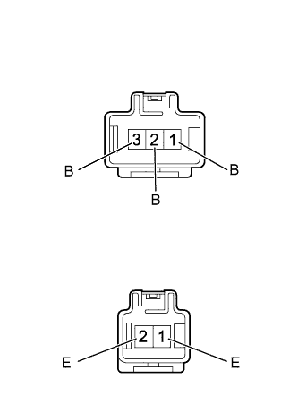

СИСТЕМА КОНДИЦИОНИРОВАНИЯ (для моделей с автоматическим кондиционером) > Цепь подогревателя PTC |
| 1.ПРОВЕРЬТЕ РЕЛЕ ПОДОГРЕВАТЕЛЯ PTC (PTC № 1, PTC № 2, PTC № 3) |
Извлеките реле PTC № 1, PTC № 2 и PTC № 3 из блока реле моторного отсека № 2.
Измерьте сопротивление в соответствии со значениями, приведенными в таблице ниже.
| Контакты для подключения диагностического прибора | Условие | Заданные условия |
| 3 - 5 | Напряжение аккумуляторной батареи не подается на контакты 1 и 2 | 10 кОм или более |
| Напряжение аккумуляторной батареи подается на контакты 1 и 2 | Менее 1 Ом |
|
| ||||
| OK | |
| 2.ПРОВЕРЬТЕ БЛОК УПРАВЛЕНИЯ СИСТЕМОЙ КОНДИЦИОНИРОВАНИЯ |
Снимите блок управления системой кондиционирования в сборе, не отсоединяя его разъемы (Нажмите здесь).
Измерьте напряжение в соответствии со значениями, приведенными в таблице.
| Контакты для подключения диагностического прибора | Условие | Заданные условия |
| G25-3 (PTC1) - масса |
| Менее 1 В* |
| G25-22 (PTC2) - масса |
| |
| G25-4 (PTC3) - масса |
| |
| G25-3 (PTC1) - масса |
| 11–14 В* |
| G25-22 (PTC2) - масса |
| |
| G25-4 (PTC3) - масса |
|
| *a | Устройство с подсоединенным жгутом проводов (блок управления системой кондиционирования) |
|
| ||||
| OK | |
| 3.ПРОВЕРЬТЕ ЖГУТ ПРОВОДОВ И РАЗЪЕМ (БЛОК РЕЛЕ № 2 МОТОРНОГО ОТСЕКА - БЛОК УПРАВЛЕНИЯ СИСТЕМОЙ КОНДИЦИОНИРОВАНИЯ) |
Извлеките реле подогревателя PTC из блока реле моторного отсека № 2.
Отсоедините разъем G25 блока управления.
Измерьте сопротивление в соответствии со значениями, приведенными в таблице ниже.
| Контакты для подключения диагностического прибора | Условие | Заданные условия |
| Контакт 1 реле PTC № 1 - G25-3 (PTC1) | Всегда | Менее 1 Ом |
| Контакт 1 реле PTC № 2 - G25-22 (PTC2) | ||
| Контакт 1 реле PTC № 3 - G25-4 (PTC3) | ||
| Контакт 1 реле подогревателя PTC № 1 - масса | Всегда | 10 кОм или более |
| Контакт 1 реле подогревателя PTC № 2 - масса | ||
| Контакт 1 реле подогревателя PTC № 3 - масса |
|
| ||||
| OK | |
| 4.ПРОВЕРЬТЕ ЖГУТ ПРОВОДОВ И РАЗЪЕМ (БЛОК РЕЛЕ № 2 МОТОРНОГО ОТСЕКА - УСТРОЙСТВО БЫСТРОГО ПОДОГРЕВА) |
Извлеките реле подогревателя PTC из блока реле моторного отсека № 2.
Отсоедините разъем G28 подогревателя.
Измерьте сопротивление в соответствии со значениями, приведенными в таблице ниже.
| Контакты для подключения диагностического прибора | Условие | Заданные условия |
| Контакт 3 реле PTC № 1 - G28-2 (B) | Всегда | Менее 1 Ом |
| Контакт 3 реле PTC № 2 - G28-3 (B) | ||
| Контакт 3 реле PTC № 3 - G28-1 (B) | ||
| Контакт 3 реле подогревателя PTC № 1 - масса | Всегда | 10 кОм или более |
| Контакт 3 реле подогревателя PTC № 2 - масса | ||
| Контакт 3 реле подогревателя PTC № 3 - масса |
|
| ||||
| OK | |
| 5.ПРОВЕРЬТЕ ЖГУТ ПРОВОДОВ И РАЗЪЕМ (БЛОК РЕЛЕ № 2 МОТОРНОГО ОТСЕКА - АККУМУЛЯТОРНАЯ БАТАРЕЯ И МАССА) |
Извлеките реле подогревателя PTC из блока реле моторного отсека № 2.
Измерьте напряжение в соответствии со значениями, приведенными в таблице.
| Контакты для подключения диагностического прибора | Условие | Заданные условия |
| Контакт 5 реле подогревателя PTC № 1 - масса | Всегда | 11-14 В |
| Контакт 5 реле подогревателя PTC № 2 - масса | ||
| Контакт 5 реле подогревателя PTC № 3 - масса |
Измерьте сопротивление в соответствии со значениями, приведенными в таблице ниже.
| Контакты для подключения диагностического прибора | Условие | Заданные условия |
| Контакт 2 реле подогревателя PTC № 1 - масса | Всегда | Менее 1 Ом |
| Контакт 2 реле подогревателя PTC № 2 - масса | ||
| Контакт 2 реле подогревателя PTC № 3 - масса |
| *1 | Реле PTC № 1 |
| *2 | Реле PTC № 2 |
| *3 | Реле PTC № 3 |
| *a | Устройство с извлеченным реле (блок реле № 2 моторного отсека) |
|
| ||||
| OK | |
| 6.ПРОВЕРЬТЕ УСТРОЙСТВО БЫСТРОГО ПОДОГРЕВА В СБОРЕ |
|  |
Снимите устройство быстрого подогрева в сборе (Нажмите здесь).
Измерьте сопротивление в соответствии со значениями, приведенными в таблице ниже.
| Контакты для подключения диагностического прибора | Условие | Заданные условия |
| 1 (B) - 1 (E) | Всегда | Менее 1 кОм |
| 2 (B) - 1 (E) | ||
| 2 (B) - 2 (E) | ||
| 3 (B) - 2 (E) |
|
| ||||
| OK | |
| 7.ПРОВЕРЬТЕ ЖГУТ ПРОВОДОВ И РАЗЪЕМ (УСТРОЙСТВО БЫСТРОГО ПОДОГРЕВА – МАССА) |
Отсоедините разъем G29 подогревателя.
Измерьте сопротивление в соответствии со значениями, приведенными в таблице ниже.
| Контакты для подключения диагностического прибора | Условие | Заданные условия |
| G29-1 (E) - масса | Всегда | Менее 1 Ом |
| G29-2 (E) - масса |
| *a | Вид спереди разъема со стороны жгута проводов: (к устройству быстрого подогрева в сборе) |
|
| ||||
| OK | ||
| ||